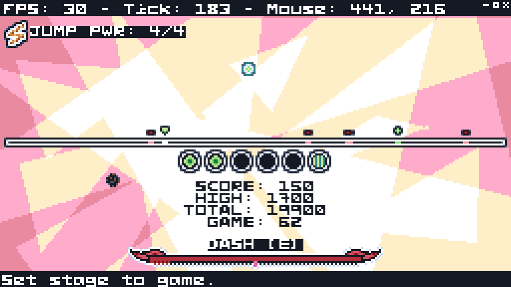
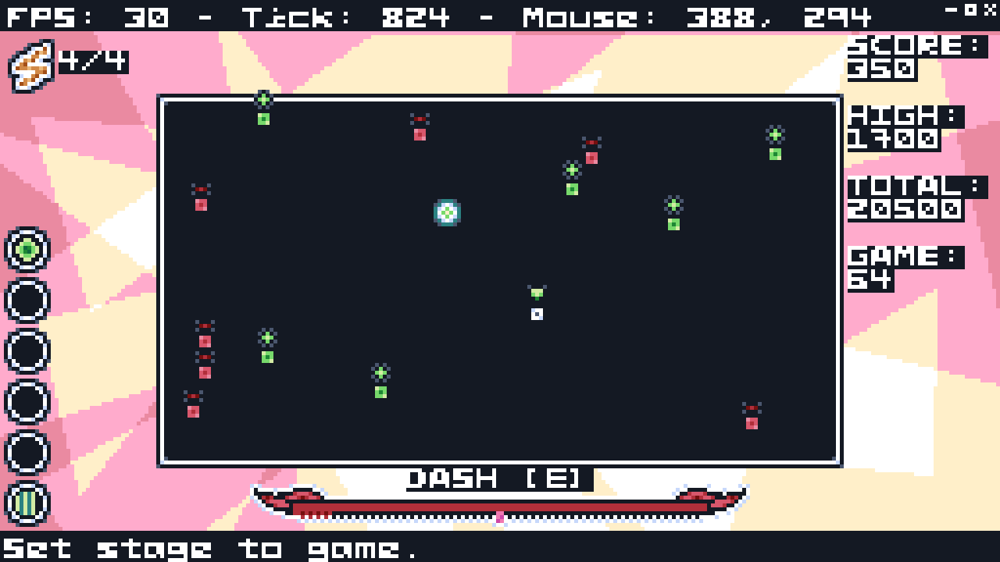
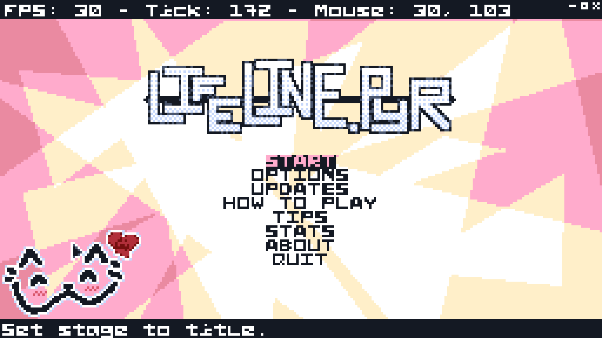

Welcome to Lifeline.PYR!
Or, more, accurately, welcome to its website. :-3
Lifeline.PYR is an arcade-style game for desktop (Linux & Windows)
where you play on a line, with your health constantly depleting,
and try to get randomly spawning heals.
More gameplay info in Gameplay.
Lifeline.PYR is FOSS (Free and Open-Source Software). At no point does it cost any money.
Anybody is free to modify and redistribute it under the terms of the GNU GPLv3
(see FOSS & Licensing).
Table of Contents
Gameplay
You are on a line (or in a rectangle, if in the 2D gamemode),
and can move left and right (or left, right, up, and down, if in the 2D gamemode).
Your health starts at 5 and is constantly decreasing.
Heals and enemies randomly spawn. Heals give you one health point while enemies take one away.
Your goal is to stay alive for the longest amount of time that you can.
There are also other mechanics, such as:
- Jumping (a two-second invincibility frame that takes ten seconds to recharge, but you also can't get heals while using it (don't worry you can stop a jump by pressing [S]))
- Dashing (self-explanatory)
- Power-ups (fall from the top of the screen and help you, are more common when you need them because of a deliberate mechanic i call "urgency")
- Hazards (also fall from the top of the screen but they don't really help you)
- Lasers (strike you from the sky (with a warning), do not touch them)
Screenshots
Hover over on desktop / tap on mobile to enlarge these screenshots. :]



Download
FOSS & Licensing
Lifeline.PYR is licensed under the
GNU GPLv3
(GNU General Public License v3). It is FREE SOFTWARE.
Most assets in the game (besides the font, we will get to that) are licensed under the
CC-BY-SA
(Creative Commons Attribution-ShareAlike).
The game's font (and the one used here),
PYR5x5, is licensed under the
SIL OFL
(SIL Open Font License).
Finally, this website itself is licensed under the
MIT License.
The code is listed on GitHub.
Contributions are always welcome.